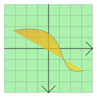

QGraphicsPathItem Class
The QGraphicsPathItem class provides a path item that you can add to a QGraphicsScene. More...
| Header: | #include <QGraphicsPathItem> |
| qmake: | QT += widgets |
| Since: | Qt 4.2 |
| Inherits: | QAbstractGraphicsShapeItem |
This class was introduced in Qt 4.2.
Public Types
| enum | anonymous { Type } |
Public Functions
| QGraphicsPathItem(const QPainterPath &path, QGraphicsItem *parent = nullptr) | |
| QGraphicsPathItem(QGraphicsItem *parent = nullptr) | |
| virtual | ~QGraphicsPathItem() |
| QPainterPath | path() const |
| void | setPath(const QPainterPath &path) |
Reimplemented Public Functions
| virtual QRectF | boundingRect() const override |
| virtual bool | contains(const QPointF &point) const override |
| virtual bool | isObscuredBy(const QGraphicsItem *item) const override |
| virtual QPainterPath | opaqueArea() const override |
| virtual void | paint(QPainter *painter, const QStyleOptionGraphicsItem *option, QWidget *widget = nullptr) override |
| virtual QPainterPath | shape() const override |
| virtual int | type() const override |
Detailed Description
To set the item's path, pass a QPainterPath to QGraphicsPathItem's constructor, or call the setPath() function. The path() function returns the current path.

QGraphicsPathItem uses the path to provide a reasonable implementation of boundingRect(), shape(), and contains(). The paint() function draws the path using the item's associated pen and brush, which you can set by calling the setPen() and setBrush() functions.
See also QGraphicsRectItem, QGraphicsEllipseItem, QGraphicsPolygonItem, QGraphicsTextItem, QGraphicsLineItem, QGraphicsPixmapItem, and Graphics View Framework.
Member Type Documentation
enum QGraphicsPathItem::anonymous
The value returned by the virtual type() function.
| Constant | Value | Description |
|---|---|---|
QGraphicsPathItem::Type | 2 | A graphics path item |
Member Function Documentation
QGraphicsPathItem::QGraphicsPathItem(const QPainterPath &path, QGraphicsItem *parent = nullptr)
Constructs a QGraphicsPath item using path as the default path. parent is passed to QAbstractGraphicsShapeItem's constructor.
See also QGraphicsScene::addItem().
QGraphicsPathItem::QGraphicsPathItem(QGraphicsItem *parent = nullptr)
Constructs a QGraphicsPath. parent is passed to QAbstractGraphicsShapeItem's constructor.
See also QGraphicsScene::addItem().
[virtual] QGraphicsPathItem::~QGraphicsPathItem()
Destroys the QGraphicsPathItem.
[override virtual] QRectF QGraphicsPathItem::boundingRect() const
Reimplements: QGraphicsItem::boundingRect() const.
[override virtual] bool QGraphicsPathItem::contains(const QPointF &point) const
Reimplements: QGraphicsItem::contains(const QPointF &point) const.
[override virtual] bool QGraphicsPathItem::isObscuredBy(const QGraphicsItem *item) const
Reimplements: QAbstractGraphicsShapeItem::isObscuredBy(const QGraphicsItem *item) const.
[override virtual] QPainterPath QGraphicsPathItem::opaqueArea() const
Reimplements: QAbstractGraphicsShapeItem::opaqueArea() const.
[override virtual] void QGraphicsPathItem::paint(QPainter *painter, const QStyleOptionGraphicsItem *option, QWidget *widget = nullptr)
Reimplements: QGraphicsItem::paint(QPainter *painter, const QStyleOptionGraphicsItem *option, QWidget *widget).
QPainterPath QGraphicsPathItem::path() const
Returns the item's path as a QPainterPath. If no item has been set, an empty QPainterPath is returned.
See also setPath().
void QGraphicsPathItem::setPath(const QPainterPath &path)
Sets the item's path to be the given path.
See also path().
[override virtual] QPainterPath QGraphicsPathItem::shape() const
Reimplements: QGraphicsItem::shape() const.
[override virtual] int QGraphicsPathItem::type() const
Reimplements: QGraphicsItem::type() const.